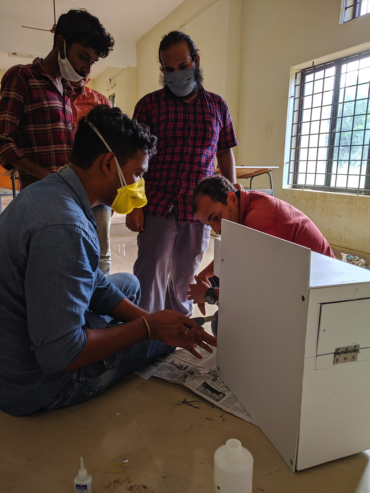
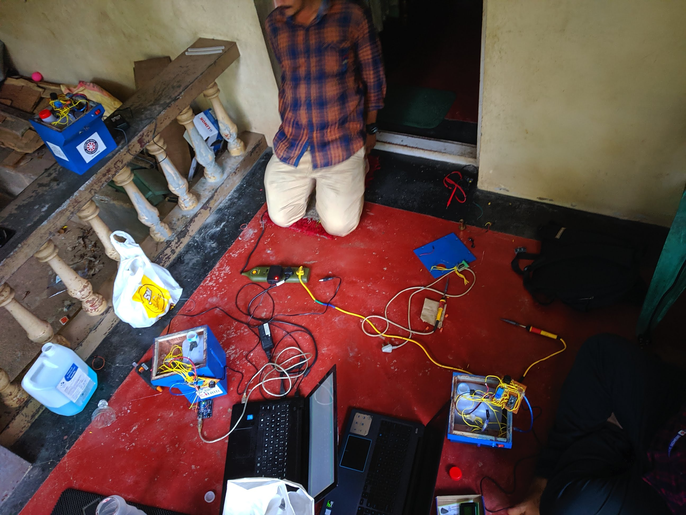
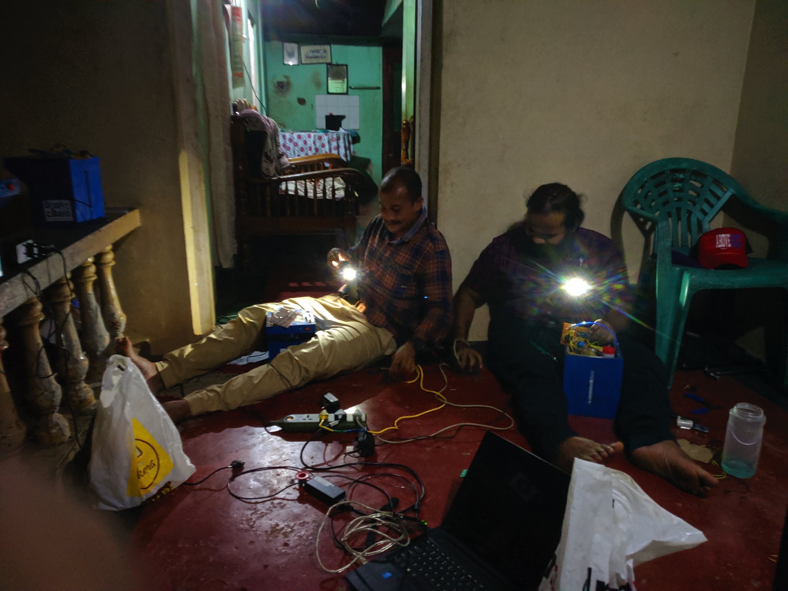
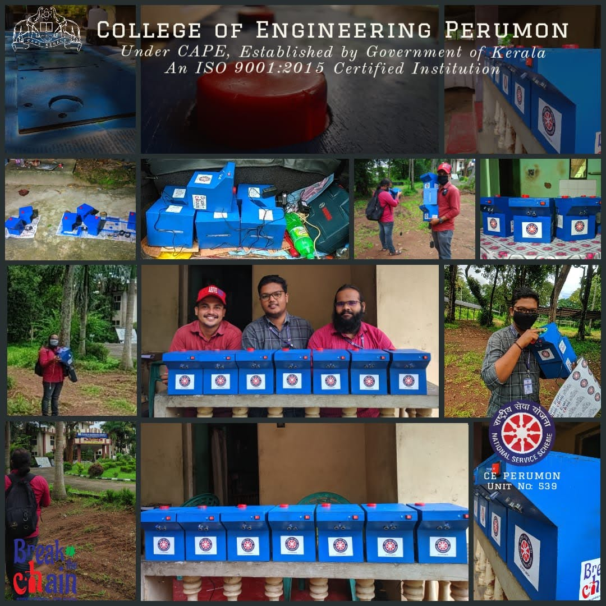
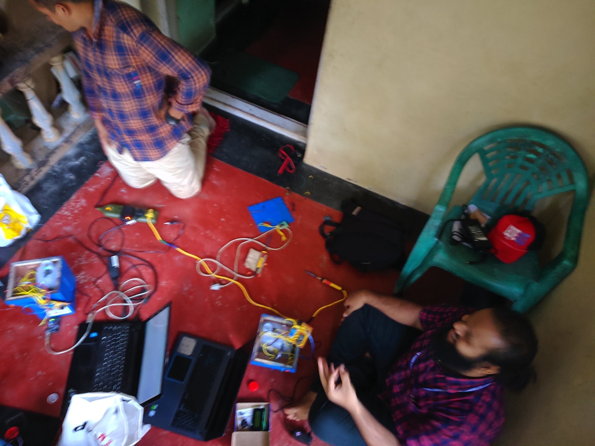
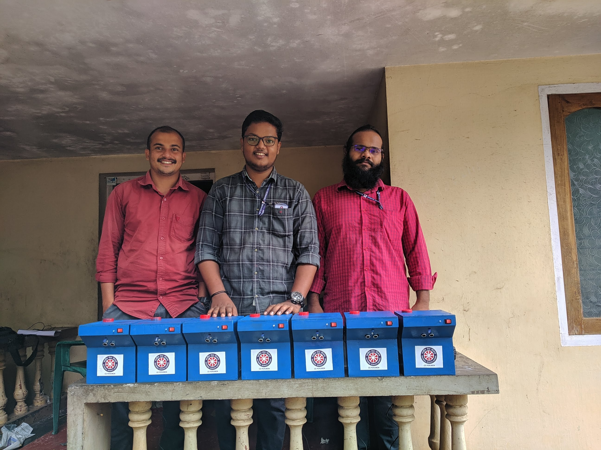

Why we built it
By mid-2020 the Panayam panchayath had converted a wing of the college into a COVID First Line Treatment Centre. Hand-hygiene compliance at the entrance, dining and treatment-room thresholds was a real operational risk. Commercial automatic dispensers were either out of stock or out of budget. The NSS team had access to the electronics teaching lab, a box of recovered Arduino Nanos, a few HC-SR04 sensors, a handful of small relays and a stack of 9 V batteries from older lab modules.
The brief from the panchayath was simple: a working contactless dispenser, replicated enough times to cover the centre’s flow points, ready before the next intake of treatment patients. We had about three weeks and no funding.
Build — bench prototype
The control loop is intentionally minimal: an HC-SR04 reads distance every ~50 ms; if the reading falls below a configured threshold (~6 cm) for two consecutive samples the Arduino drives a relay closed for a fixed dispense duration, then enforces a refractory window so a held hand can’t trigger repeatedly. The relay switches a small pump driving a flexible delivery tube from the sanitiser reservoir. The first stable bench prototype is below — HC-SR04 mounted to the edge of a desk, Arduino Nano on a breadboard, two 9 V cells in series feeding the relay rail.

From one unit to seven
Once the control loop was reliable, the constraint shifted from electronics to manufacturing. We standardised on a wooden enclosure painted high-visibility blue (so it would read clearly against the institutional white walls), drilled a 6 mm dispensing nozzle on the front face and routed the HC-SR04 sensor through two flush-mounted apertures. Each unit got a power-rocker switch and an indicator LED at the top, and the NSS Unit 539 / “Break the Chain” livery on the side panel.

The control loop in plain words
- Sense: HC-SR04 emits a 40 kHz pulse, times the echo, converts to distance via the speed-of-sound constant; readings averaged in pairs to suppress the occasional bad echo.
- Decide: if distance is below the dispense threshold for two consecutive reads, fire. After firing, enforce a ~3 s refractory window before the next decision is allowed.
- Act: Arduino digital pin drives the relay coil; the relay’s NO contact closes the pump’s power line for the configured dispense duration.
- Power: battery rail keeps the unit independent of the building’s outlet topology — useful for the entrance vestibule where there was no convenient mains point.
Deployment day
The seven units were transported to the panchayath in a shared car (everything moved together because the panchayath wanted simultaneous coverage at all flow points). The deployment was inaugurated by Smt. J. Mercykutty Amma, who was the local minister at the time. The unit she inaugurated — the white “Break the Chain” cabinet — was the standardised reference build that the team adopted as the public-facing finish.




What it shows about the engineering reflex
This is not a centrepiece in the way the Siemens thesis or the energy-system modelling work is. It is included here for what it taught early:
- Constraint thinking. The interesting variable in the project wasn’t the algorithm — the algorithm is two if-statements. The interesting variable was “what can we actually source by Tuesday from things people already threw out?” That framing — what is the binding constraint, and is it a technical one or a logistics one — carries directly into industrial decarbonisation work where the binding constraint is rarely the heat-pump COP.
- Sensor-actuator loop discipline. Closing a feedback loop, suppressing noise, enforcing a refractory window so a steady hand doesn’t drain the reservoir — these are the same disciplines that show up later in the Siemens thesis instrumentation chain (NI-DAQ thresholds, monitor-then-act).
- Replicability over cleverness. One clever unit isn’t useful if you can’t make seven of them with the same parts list. The standardised enclosure, the documented threshold values and the visible Break-the-Chain livery were the deliverables, not the proof-of-concept.
- Public engineering. A part of the reflex that informs the targeted KTH PhD direction is that engineering is for someone — a panchayath, a treatment centre, an operations team — not just for a thesis defence. That framing started here.
Limitations and honest framing
The project does not generalise to anything I would put on a thermal-fluid CV. The 6 cm trigger threshold was set by trial, not calibrated against a published HC-SR04 datasheet error model. The dispense volume was set by clock duration, not by a flow-rate sensor — so a viscosity change in the sanitiser stock would have shifted the delivered dose without being measured. The enclosures were wooden because plywood was free; they were not waterproof. Battery life was short enough that the panchayath replaced cells on a rota.
What it is: a credible early evidence of building under a real constraint, finishing the job, and standing next to the people who would use it.